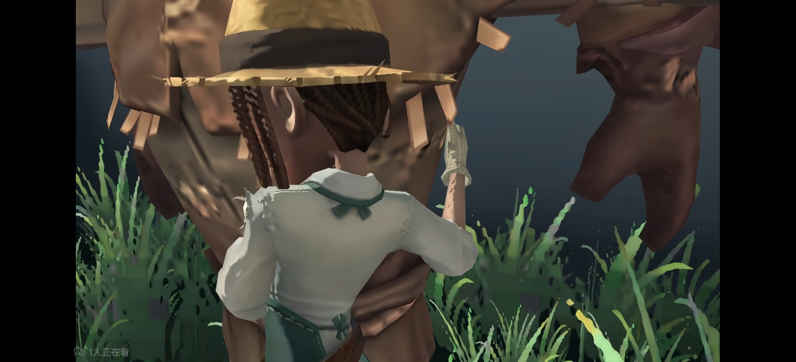

潮与汐第一次把这首歌从头到尾唱完已经是凌晨了。
此前的十几个版本都躺在手机里，最长的一段唱到了副歌，最短的只有开头两句。
她总是能听出一点问题：呼吸不够稳，尾音不好听，镜头里的表情也有些僵。
于是她最常做的就是听完便按下删除。
她很擅长删除，删除写了一半的随笔，删除许多次没来得及送到丁程鑫面前的真心。
这是这一次，她的手指停在删除键上方，很久没有落下去。
书桌旁贴着一张已经有些褪色的票根。
之前那场演出结束以后，潮与汐给丁程鑫写了很长的一段话。
她写他站在舞台上时很亮，也写自己好像永远只能站在人群里，隔着太远的距离看他。
尽管她知道，他一直在努力回应。
丁程鑫后来唱过一首歌。
唱到最后，他望着台下说，喜欢一样东西，就应该把它好好做下去，哪怕一开始没人看见，也不能因为害怕做得不好，连第一步都不肯走。
潮与汐记了很久。
她从那以后重新翻开写到一半的本子，把已经搁置的随笔补完，也重新去跳舞，从最简单的动作开始练。
第一天依旧跟不上节拍，第二天腿疼得走路都费劲，到了第三天，她还是按时去了。
她也依然会怀疑自己。
区别只在于，从前她一旦觉得自己做得不够好，就会把一切藏起来，但是现在她愿意再试一次。
手机里的歌刚好播放到了结尾。
潮与汐听见自己的声音伴随着最后一个字落下来，没有多么完美，但是很完整。
她把视频发了出去。
没有写什么过于郑重的话，只配了一张夜晚的海。
潮水从远处推过来，在岸边留下一层很浅的白色泡沫，又慢慢退回黑暗里。
发送成功的提示出现以后，她习惯性地想把手机扣下，却还是重新翻了回来。
她坐在那里，看着第一个播放量出现，然后是第二个、第三个。
有人说喜欢她的声音，也有人问她以后还会不会继续唱。
潮与汐认真回复："会的。"
奇妙的感觉。
她没有立刻想到丁程鑫会不会看见，也没有再把每一次尝试都当成递给他的情书。
她只是第一次觉得，即使那道曾经吸引她向前的光没有回头，她也可以继续唱完下一首歌。
几天以后，潮与汐去了丁程鑫的演唱会。
她坐的位置不算靠前，周围全是晃动的灯牌。
丁程鑫从升降台上出现时，她仍然和从前一样，一眼便在人群里找到了他。
可那一天似乎又和之前不太一样。
她没有急着猜测他会不会看见自己。
音乐响起以后，她跟着身边的人一起唱，声音很轻，却没有刻意地藏在喧闹声里。
丁程鑫的目光扫过观众席。
第一次经过她所在的方向时，他已经走出几步。
下一秒，他却忽然停下来，回过头，重新朝这里看了一眼。
潮与汐握着灯牌的手紧了紧。
舞台与观众席之间隔着灯光、设备和数不清的人。
她看不清他脸上全部的神情，只能确定那道视线没有立刻移开。

隔着稻草人 · 相互拥抱这一瞬间，她想起了那具稻草人。
粗糙的草叶裹住真正的身体，伪装遮住了里面的人。
园丁隔着那层扎人的外壳靠近，只能凭一点隐约传来的温度，确认有人也在拥抱她。
潮与汐从前总觉得，她和丁程鑫也是这样。
她把喜欢藏进随笔、歌声和每一次不敢说破的注视里。
他藏在舞台、歌词和那些可以被解释成巧合的回应后面。
他们都没有真正拆掉伪装却已经隔着稻草人的身体拥抱过太多次。
舞台上的丁程鑫抬起手，轻轻碰了一下耳返。
原定的伴奏没有响起。
几秒钟的空白过后，乐队重新给出第一个音。
潮与汐愣住了。
那是她几天前，第一次完整唱完的歌。
她没有第一时间意识到发生了什么，只觉得耳边所有的欢呼都慢慢远了，连身旁挥舞的灯牌也像隔着一层雾。
她听见熟悉的前奏，听见熟悉的旋律，那是她反反复复录了十几遍，又鼓起勇气发出去的歌。
丁程鑫站在聚光灯下，一字一句地唱着，像第一次唱给她听一样认真。
潮与汐低下头，眼泪向下，嘴角向上，可尽管如此她还是忍不住多想。
也许只是巧合。
也许只是歌单临时调整。
也许只是最近刚好喜欢这首歌。
潮与汐很擅长做这样的事情，别人递来一点点善意，她会放大很多倍，可当那份善意真的落到自己身上时，她又会下意识后退，告诉自己不要误会。
直到丁程鑫唱到副歌。
他抬起头，目光越过前排密密麻麻的人群，重新落到了她这里。
目光停留在她身上久久没有离开，久到身边的粉丝已经觉得不对劲，久到潮与汐只能溺在他的眼神里。
舞台灯光很亮，亮得她几乎睁不开眼，却偏偏能够清楚地看见那双眼睛里的笑意。
并不是淡淡地扫过，也不是偶然地看见。
丁程鑫直直地望向她，眼睛里写满了，我找到你了。
潮与汐握着灯牌，忽然觉得掌心有些发烫。
她想起自己发出去的视频。
评论区有人问她："为什么突然开始唱歌了？"
她没有回答真正的原因。
其实一开始，她只是想离丁程鑫近一点。
她喜欢看他站在舞台上的样子，也喜欢听他说起那些关于热爱、坚持和成长的话。
她曾经无数次觉得，他们之间隔着一段太远太远的距离，远到她只能站在人群里，仰着头望向那束光。
于是她开始学着唱歌。
开始写完那些总是半途而废的随笔。
开始认真练习每一个动作。
最初都是为了靠近他。
后来慢慢地，她发现，原来这些事情本身就足够让人快乐。
她喜欢站在镜子前，一遍遍把动作练熟，喜欢戴着耳机，把一句歌词唱到满意，喜欢深夜敲下最后一个句号的时候，那种终于完成了一件事的踏实。
她追逐的那束光，没有把她变成另一个人。
只是让她重新看见了自己。
舞台上的音乐仍在继续。
丁程鑫忽然抬起手，轻轻碰了一下胸口，动作很短暂，没人会注意到，大家应该只会认为这是演出的设计。
可潮与汐却莫名想到了，很久以前自己写过一句话。
她说，人真正喜欢一个人的时候，好像总会下意识去确认心跳。
那段文字从来没有发在过公开平台，她只发给过丁程鑫。
如果第一首歌还能解释成巧合，那么这个动作呢？
如果连这个也只是巧合......
那未免太多了。
她望着台上的人，恍惚间觉得那具藏在稻草里的身影终于轻轻动了一下。
园丁隔着粗糙的草叶拥抱着稻草人，她一直知道，里面藏着一个人，可她始终不敢伸手拆开那层伪装。
因为她害怕，害怕里面什么都没有，也害怕里面真的有人。
所以她宁愿隔着草叶感受那一点点温度，把所有回应都解释成自己的幻想。
可现在，藏在里面的人却像是终于等不及了。
他没有走出来，却轻轻握住了她抱着稻草人的那双手。
那一点温度穿过粗糙的草叶，落进掌心。
原来从来都不是她一个人在隔着稻草人拥抱。
演唱会结束以后，潮与汐坐在回程的车上。
窗外的霓虹飞快后退，她抱着包，迟迟没有说话。
朋友还沉浸在刚才的兴奋里，不停讨论舞台、灯光，还有那首临时换掉的歌。
潮与汐打开手机。
微博刷新以后，丁程鑫更新了一条动态。
只有短短一句话。
"愿每一个勇敢迈出第一步的人，都能走到属于自己的舞台。"
潮与汐盯着那句话，看了很久很久。
她想起自己第一次发视频时，评论区有人问她，还会不会继续唱。
当时她回答的是：
"会的。"
那时候，她只是想给自己一个答案。
而这一刻，她觉得，似乎也有人隔着很远很远的距离，认真地回答了她。
潮与汐关掉手机，抬头望向车窗外。
城市的灯光一盏一盏向后退去，像海面上浮动的潮汐。
她轻笑，原来丁程鑫带给她的，从来都不是"成为他身边的人"。
而是让她终于敢一步一步，走向那个曾经连自己都不敢相信的自己。
她仍然会继续喜欢他，仍然会在人群里，一眼就找到站在舞台上的那个人。
可从今以后，她不再只是追逐他的光。
她会带着他曾给予自己的勇气，继续唱歌，继续写字，继续认真地生活。
直到某一天，她也能成为照亮别人的那束光。
而当她回过头时，她知道，那个藏在稻草人身后的人，一直都在。一直望着她。也一直，为她而鼓掌。